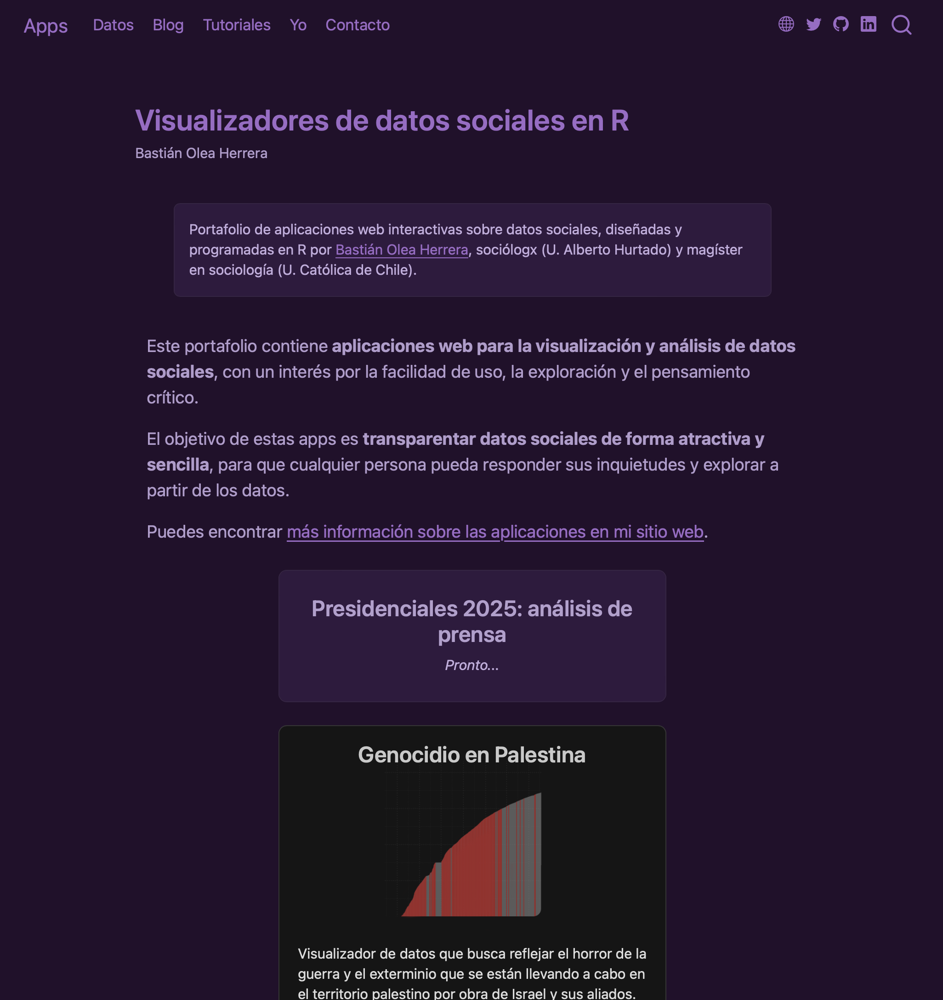
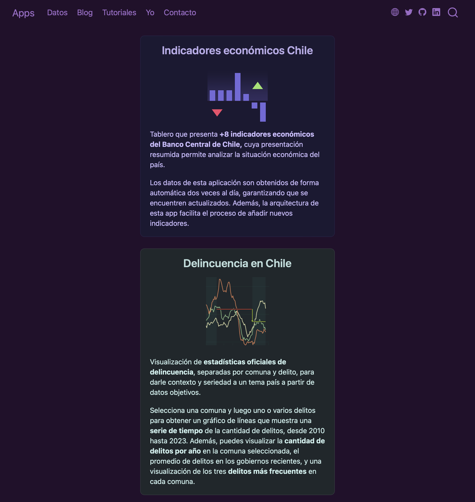
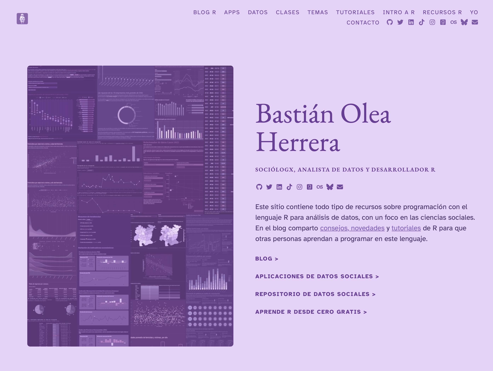
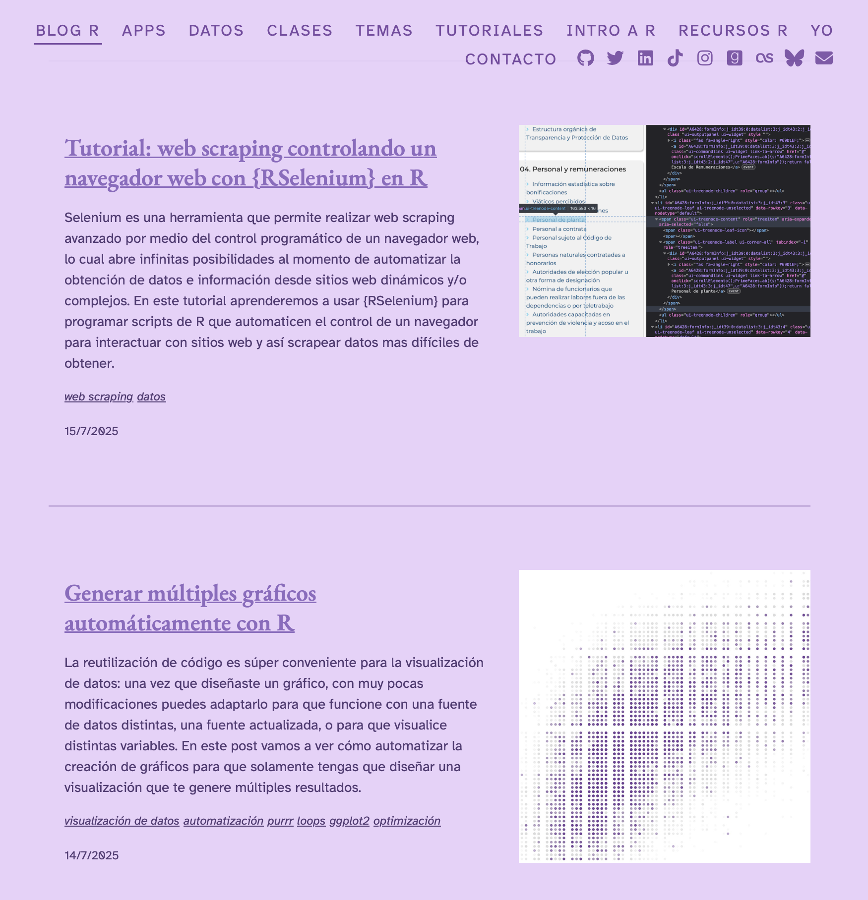
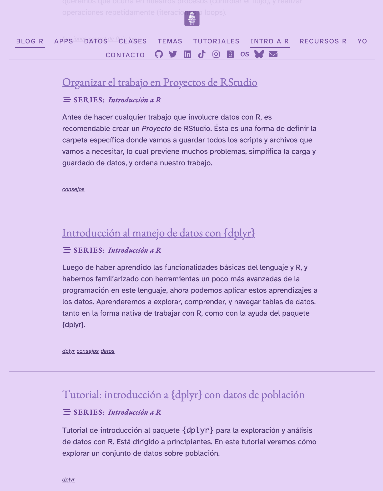
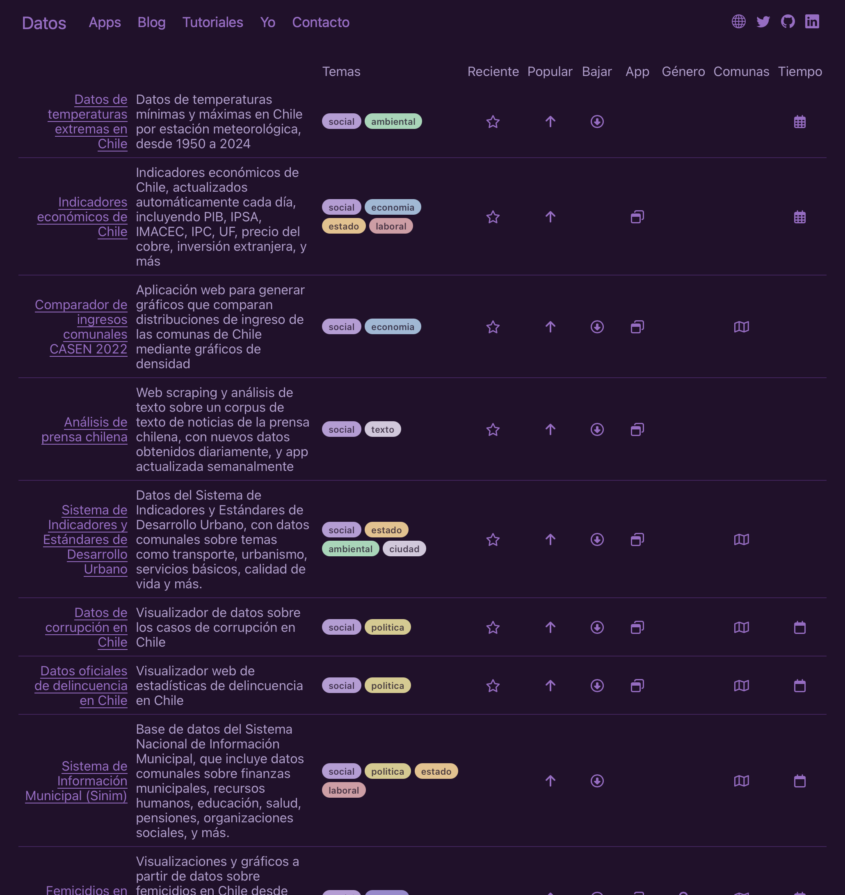
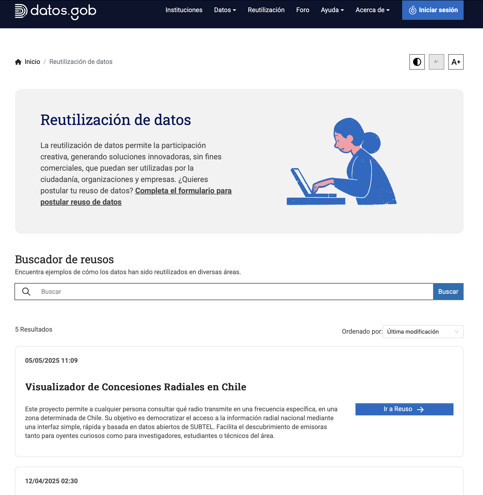
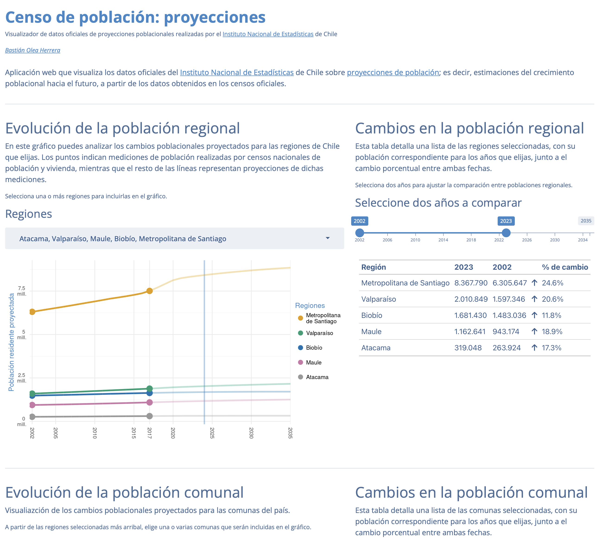

Diplomado de Ciencia de Datos para Ciencias Sociales y Humanidades
Aplicaciones desarrolladas en R y {shiny} centradas en visualización de datos públicos
Página web para presentar mis aplicaciones.


Página creada en R con Quarto y hosteada en GitHub Pages.
Sitio web sobre contenido de R, principalmente guías, tutoriales y recomendaciones
Blog donde puedo compartir cosas que aprendo, consejos para los demás, y guías para invitar a que más gente use estas herramientas.



Esta página también fue creada en R con Quarto, principalmente con una tabla hecha con el paquete {gt}, y hosteada en GitHub Pages.
Siempre va a haber gente interesada! ☺️
Portal de reutilización del sitio de Datos Abiertos del Gobierno de Chile

Visualizador de datos de proyecciones de población del Censo, Chile

{ggplot2} con temas de colores con {thematic} y tipografías con {showtext}{shiny} con temas de colores con {bslib}Diagnóstico: estado actual de la internet 😕
{usethis} 📦
readme.md para documentar y ofrecer contextoCrear un lugar, volverse encontrable
Bastián Olea Herrera — https://bastianolea.rbind.io